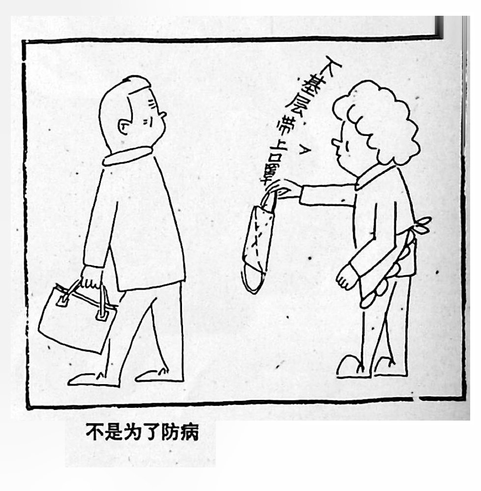

王燕 《人事》1990年第8期（总第59期），封三
不是为了防病
Not to Prevent Illness
- Text in the drawing
- 下基层，带上口罩
Going down to the grass roots — take a face mask - Description
- As a cadre sets off with his travel bag, his wife hands him a face mask — not against germs, the caption says, but presumably to keep his mouth closed to the banquets that await him.
- Note
- Cadres visiting the grass roots (下基层) were routinely feasted by their hosts. The reading of the mask's purpose is an inference.
- Artist
- Wang Yan 王燕
- Published in
- 《人事》1990年第8期（总第59期）, inside back cover
- Themes
- Gifts and banquets

Cite
Wang Yan, “不是为了防病” [Not to Prevent Illness], Renshi (Personnel) 《人事》, 1990, no. 8, inside back cover.